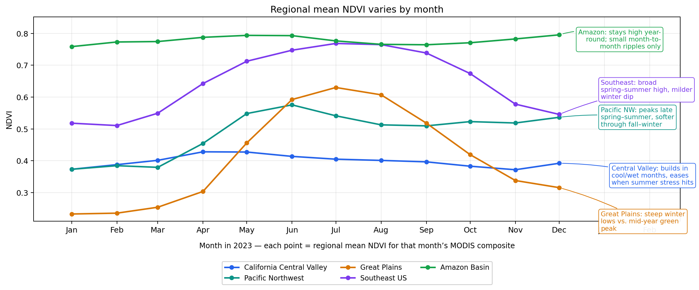
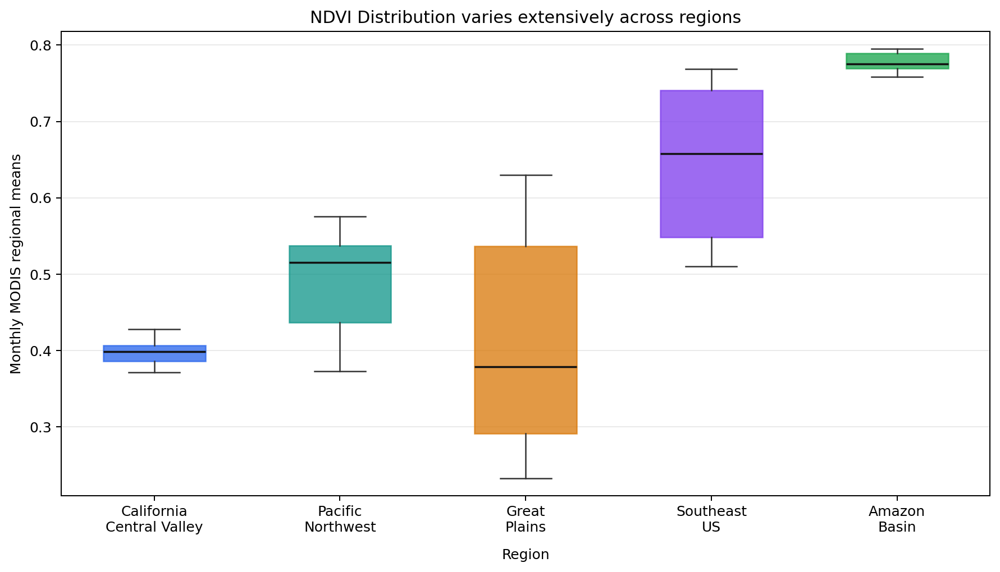
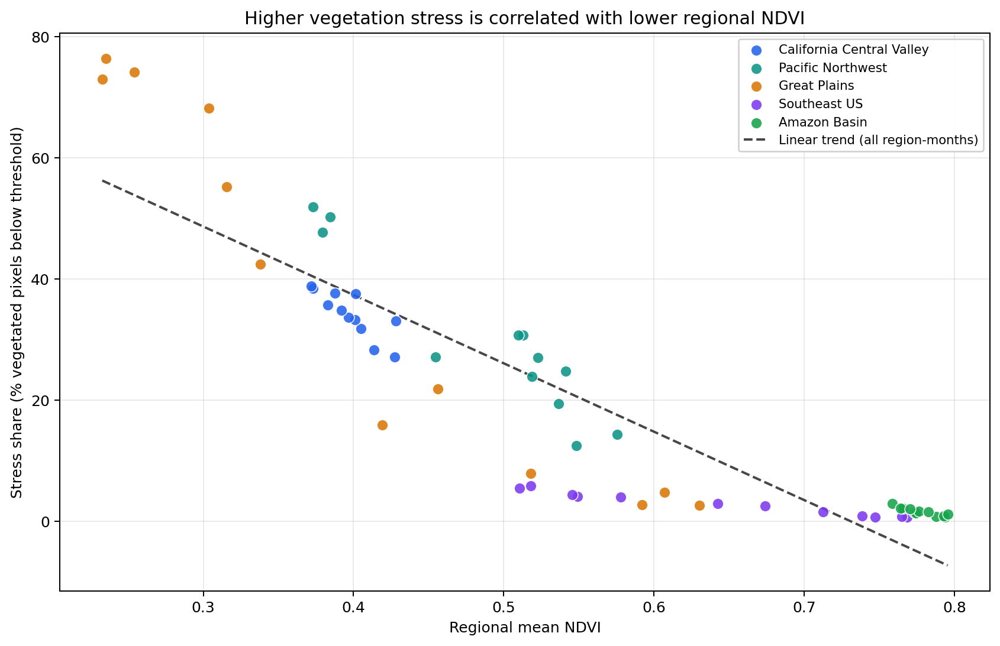
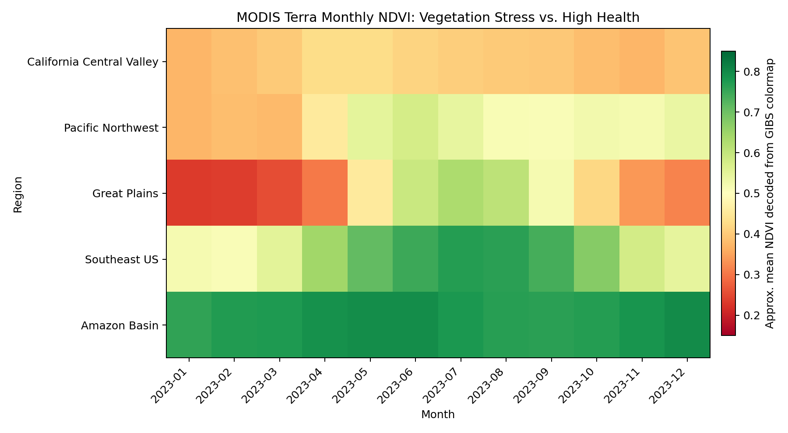
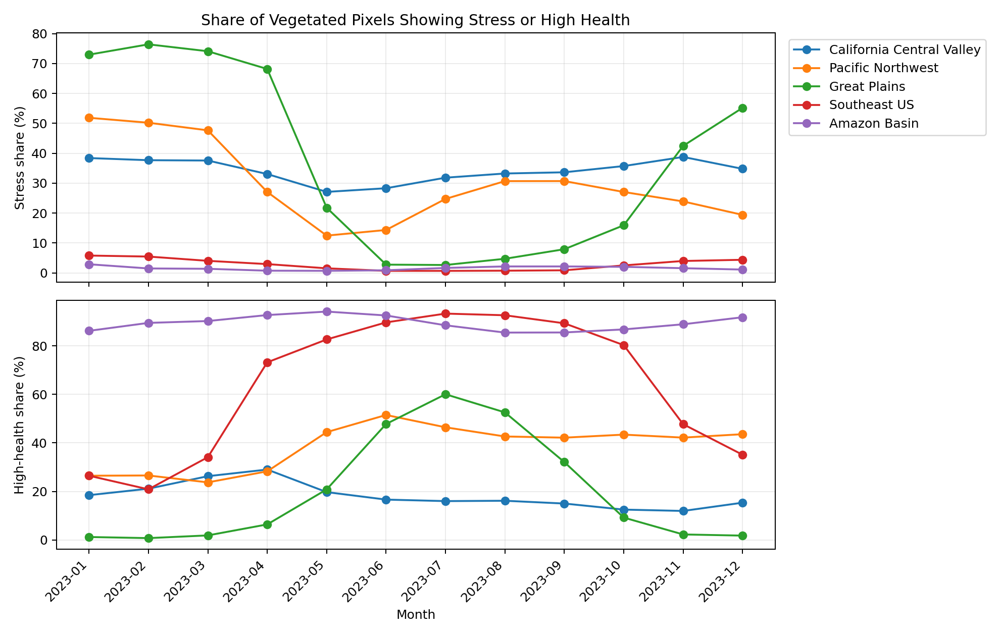

Static charts from the MODIS NDVI pipeline. Return to the
project home
for the write-up and interactive view.
Regional mean NDVI over time
Where and when NDVI is higher or lower within each region: all regions on one axis so you can
compare seasonal timing and amplitude.

Regional mean NDVI varies by month.
Each point is one month’s regional mean from the MODIS composite; colors distinguish regions.
NDVI distribution by region
How spread out monthly NDVI is within each region—useful for comparing variability and typical ranges.

NDVI distribution varies extensively across regions.
Y-axis: monthly MODIS regional means; X-axis: region (multi-line labels).
Stress vs. regional NDVI
Each point is one region-month. Lower mean NDVI tends to align with more pixels flagged as stressed,
linking the “where / when” question to stress diagnostics.

Higher vegetation stress is correlated with lower regional NDVI.
Stress share is the percentage of vegetated pixels below the stress threshold.
Mean NDVI heatmap (where & when)
Region × month grid: quick read of which areas look greener or browner in which months.

MODIS Terra monthly NDVI heatmap (Aqua fill for April 2025 where Terra is missing).
Color shows approximate mean NDVI from the GIBS colormap.
Stress and high-health shares over time
When stressed pixels dominate versus when high-health pixels dominate—directly tied to the project’s
stress vs. high-health framing.

Share of vegetated pixels showing stress or high health.
Top: stress share (%); bottom: high-health share (%).